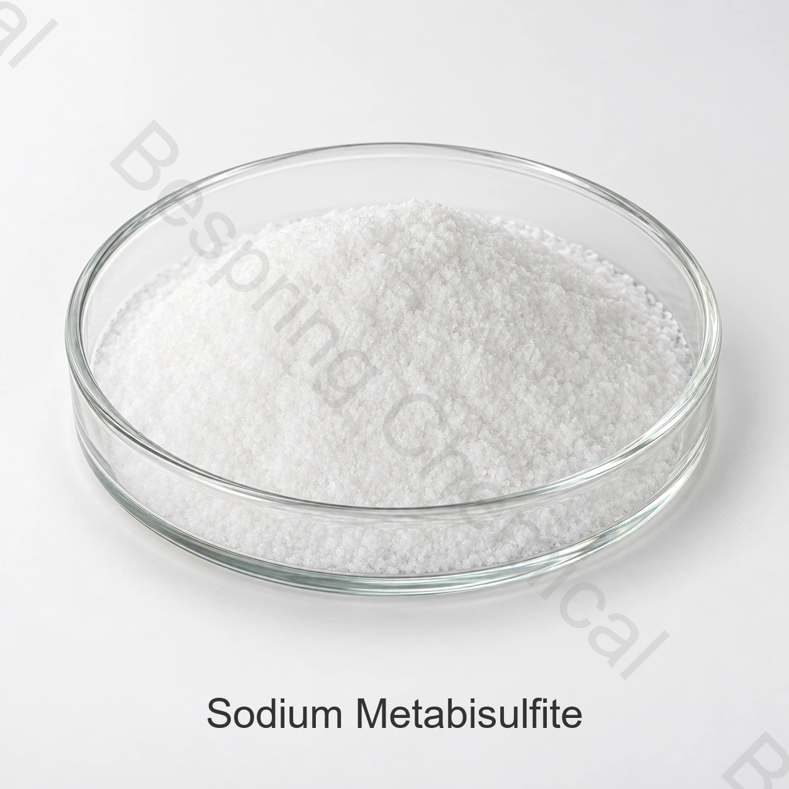

Ingrediente grau alimentício · E223 / INS 223
Metabissulfito de sódio
O metabissulfito de sódio, também chamado dissulfito de sódio ou pirossulfito de sódio, é um sulfito que pode atuar como antioxidante, agente antiescurecimento, conservante ou agente de tratamento em categorias de alimentos autorizadas.
- Produto
- Metabissulfito de sódio
- CAS
- CAS 7681-57-4
- Identificação
- E223 / INS 223
- Fórmula / referência
- Na₂S₂O₅

Imagem do produto · confirme grau e embalagem na compra
Informe aplicação, especificação, limites críticos, quantidade, embalagem e destino.
GrauAlimentício, sujeito à qualificação da origem
EmbalagemConfirmar formato, peso líquido e paletização
FornecimentoCotação conforme quantidade, destino e Incoterm
Controle de loteEspecificação vigente e COA do lote
Resposta técnica direta
O que é e como especificar
O metabissulfito de sódio, também chamado dissulfito de sódio ou pirossulfito de sódio, é um sulfito que pode atuar como antioxidante, agente antiescurecimento, conservante ou agente de tratamento em categorias de alimentos autorizadas.
Para compras industriais, o nome comercial não é suficiente. Solicite a especificação vigente da origem proposta, os métodos analíticos, um COA representativo e o certificado do lote. A conformidade deve ser avaliada para a aplicação, a norma acordada e o país onde o alimento será comercializado.
Funcionalidade em alimentos
Principais funções
Controle de escurecimento em aplicações autorizadas
Liberação de dióxido de enxofre nas condições de uso
Apoio à conservação sujeito a validação e legislação
Avaliação de aplicações
Aplicações a serem avaliadas
Frutas e hortaliças processadas em categorias autorizadas
Produtos de batata e outras matrizes suscetíveis ao escurecimento
Determinados processos de vinificação ou bebidas
Aplicações de panificação ou tratamento permitidas no mercado-alvo
As aplicações são orientativas, não autorizações gerais nem recomendações de dosagem. Confirme adequação técnica, limite de uso e rotulagem no produto final.
Guia de qualificação
Critérios de seleção para compras B2B
Teor como Na₂S₂O₅, conteúdo de SO₂, pH e insolúveis
Ferro, arsênio, chumbo e outros limites com unidades e comparadores explícitos
Umidade, estabilidade e embalagem com barreira ao ar e à água
Limite de uso, resíduo de SO₂ e declaração de sulfitos no alimento final
Sulfitos podem exigir declaração específica no rótulo e merecem atenção para consumidores sensíveis. Confirme a regra vigente, o limiar aplicável, a categoria do alimento e o teor residual no mercado-alvo; não trate uma proposta regulatória como norma já aprovada.
Documentação e fornecimento
Documentação, embalagem e logística
Para homologação do fornecedor, solicite especificação assinada, ficha técnica, FISPQ, modelo de COA, declarações regulatórias e certificados aplicáveis ao produto, à fábrica e ao período de fornecimento. Confirme peso líquido, material da embalagem e do revestimento interno, paletização, marcações, prazo de validade, armazenagem, porto de destino e Incoterm.
Fonte técnica independente
Referência técnica independente
Consulte a referência técnica oficial indicada para este produto como apoio à identidade e ao contexto regulatório. A especificação contratual e a legislação vigente do mercado-alvo prevalecem em cada operação.
Perguntas de compradores
Perguntas frequentes
Quais dados devo enviar para solicitar uma cotação?
Informe aplicação, norma e limites críticos, volume anual e por embarque, embalagem, destino, Incoterm, certificados e data necessária. Isso permite comparar propostas tecnicamente equivalentes.
Como confirmar que o material é grau alimentício?
Verifique a especificação da origem exata, a documentação do sistema de qualidade, as declarações aplicáveis e o COA do lote. O nome do produto, isoladamente, não comprova o grau.
O produto pode ser usado em qualquer alimento ou país?
Não. Confirme categoria de alimento, função, limite de uso e rotulagem na legislação vigente do mercado-alvo.
Compra orientada por especificação
Solicite uma cotação de Metabissulfito de sódio
Compartilhe a aplicação, a norma-alvo, os limites críticos, a quantidade, a embalagem, o destino e os documentos necessários.
Documentos do produto
Solicitar documentos
Informe o grau e o mercado de destino para confirmar os documentos disponíveis para seu pedido.
Uma referência externa não é um certificado de lote nem uma especificação da Bespring.